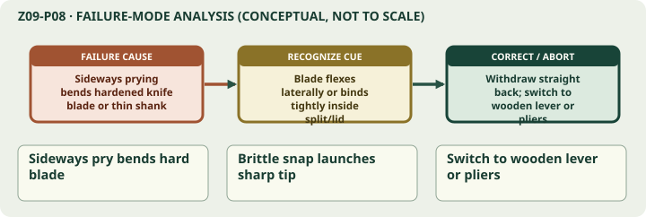

Z09-P08 · Tools and construction · New manuscript
Recognize why knives and wedges fail when used as pry bars
Prevent sudden blade snapping, flying steel tips and deep hand lacerations caused by lateral prying loads.
When it applies · Opening stuck lids, splitting wood, lifting frozen stakes or freeing wedged equipment.
Equipment · Proper steel pry bar, solid wooden lever, pliers or wooden wedge matched to the job.

Actions
- Recognize that hardened knife blades and thin screwdriver shanks are engineered for cutting or torque—NOT sideways bending—and can snap explosively under prying leverage.[K02, K01]
- Use a solid hardwood lever, flat metal tent-stake puller, multi-tool pliers or purpose-made pry bar for lifting, separating or digging stubborn items.[K02, K06, K07]
- Protect eyes and hands from sudden release whenever pulling frozen ground stakes or freeing stuck latches.[K08, K02]
Failure recognition · Jamming a folding knife tip under a frozen metal container lid or twisting a blade sideways inside a split log to lever it apart.[K02]
Verify · Confirm the tool chosen is designed for bending or pulling loads before applying lateral force.[K01, K02, ED]
Stop or change course · Stop immediately the instant any knife blade flexes laterally or binds tightly in wood—withdraw straight back and switch to a wooden wedge or lever.[K02, K06]
Evidence and editorial notes
- K01 · OSHA · Hand and Power Tools Safety and Health Topics (current web edition)
- Section: Hand Tools > General Safety Rules · Conditions: Use of knives, saws, axes, hammers and hand tools
Support: Keep hand tools in good condition, use the right tool for the job, examine each tool for damage before use, operate according to instructions and wear appropriate personal protective equipment.
Limitations: General occupational rules do not replace task-specific forestry or field-tool training. · Conflicting evidence: None; baseline tool safety framework.
Editorial note: Anchors tool selection, pre-use inspection and operating boundary cards in Z09. · Specialist reviewer: Tool safety and occupational safety
Primary source · checked 2026-11-24 - K02 · OSHA · Hand and Power Tools (OSHA 3080) (agency PDF)
- Section: Hand Tools > Knives, Chisels, Impact and Wrenches · Conditions: Manual cutting, striking and prying operations
Support: Direct cutting blades away from the body and bystanders, never use cracked wooden handles or mushroomed striking heads, and do not substitute wrenches or blades as pry bars.
Limitations: Does not specify material tensile ratings for improvised handles. · Conflicting evidence: None; directly informs safe cutting and impact-tool failure cards.
Editorial note: Prevents blade slip, splintered-handle and spalling-metal injuries. · Specialist reviewer: Tool safety and wilderness medicine
Primary source · checked 2026-11-24 - K06 · NPS · Forces and Tools (current web edition)
- Section: Forces and Tools > Simple Machines and Mechanical Advantage · Conditions: Levers, wedges, inclined planes and friction mechanisms
Support: Simple machines trade force for distance (levers, wedges, pulleys); friction, alignment and material strength limit real-world output below ideal ratios.
Limitations: Ideal mechanical advantage ignores friction losses and breaking strength of ropes or anchors. · Conflicting evidence: None; clarifies physical trade-offs without implying engineered load ratings.
Editorial note: Anchors mechanical-advantage, wedge-splitting and pulley/rigging limit cards. · Specialist reviewer: Mechanical engineering and rigging safety
Primary source · checked 2026-11-24 - K07 · NPS · Ten Essentials (current web edition)
- Section: Repair Kit and Tools · Conditions: Field equipment repair during backcountry travel
Support: Carry a route-appropriate repair kit (duct/gear tape, multi-tool, cordage, patch supplies) matched to shelter, pack, stove and water gear; verify compatibility before departure.
Limitations: Field patches restore temporary function and do not restore full original storm or load ratings. · Conflicting evidence: None; aligns with E02 and E20.
Editorial note: Grounds field-repair kits, temporary patches and equipment failure limits. · Specialist reviewer: Field equipment safety
Primary source · checked 2026-11-24 - K08 · OSHA · Hand and Power Tools (OSHA 3080) (agency PDF)
- Section: Personal Protective Equipment and Work Area Control · Conditions: Cutting, splitting, striking and rigging operations
Support: Maintain stable footing, eye and hand protection appropriate to flying chips or snapped cordage, and clear bystanders outside the swing or snap-back zone.
Limitations: Field kits often lack shop PPE, requiring slower conservative technique and lower-energy methods. · Conflicting evidence: None; drives snap-back and work-circle exclusion zones in Z09.
Editorial note: Enforces conservative work circles and snap-back clearance. · Specialist reviewer: Tool safety and occupational safety
Primary source · checked 2026-11-24
Source lineage · OSHA 3080 hand tool safety; new manuscript · Classification · New manuscript.